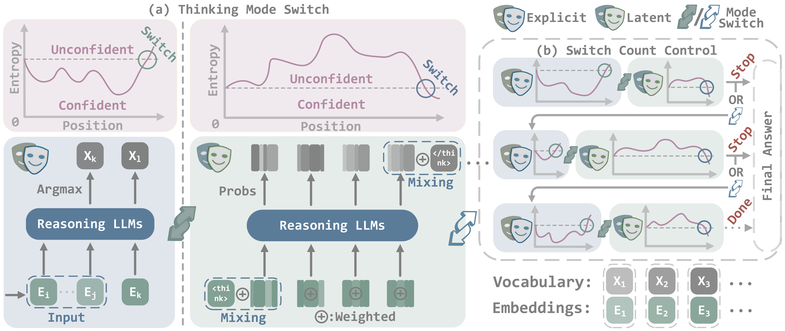
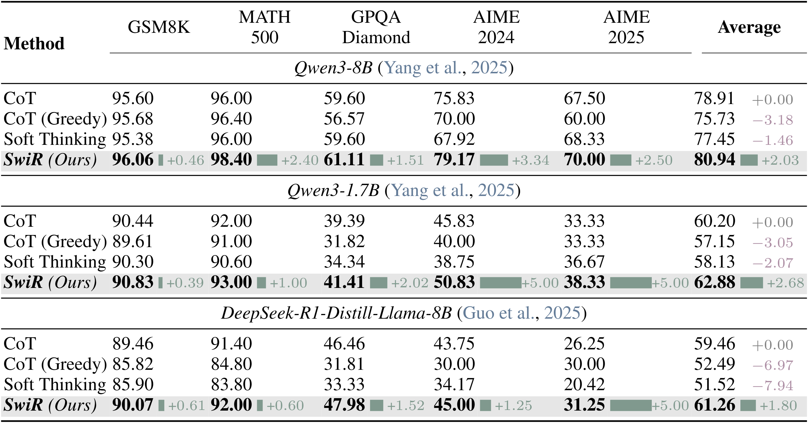
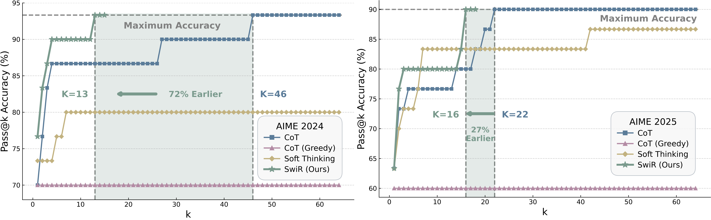

🌟 SwiReasoning Framework

Figure 3: SwiReasoning framework. (a) Dynamic mode switching alternates between explicit and latent thinking based on block-wise confidence estimated from entropy trends. (b) A switch count control mechanism limits the maximum number of thinking-block transitions, suppressing overthinking before the final answer.
📊 Pass@1 accuracy

Table 1: Comparison of SwiReasoning and CoT with sampling, CoT with greedy decoding, and Soft Thinking on mathematics and STEM benchmarks. SwiReasoning improves accuracy by +2.17% on average.
📈 Token efficiency

Figure 4: Token efficiency comparisons. SwiReasoning achieves the highest token efficiency throughout all token budgets in 13 out of 15 evaluations, with an efficiency improvement of +84% over CoT on average.
📈 Pass@k accuracy
